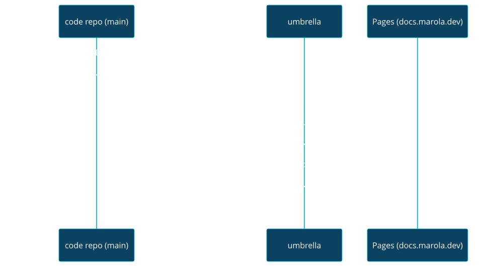

MIP-0070: Split marola into single-purpose repos under an umbrella¶
| Status | Accepted — discussed in #522; merged as #521; Tasks: docs/MIPs/MIP-0070.tasks.md (MIP-0070.tasks.md) |
| Author | Claude (Opus 5.5), with Bruno, from a brainstorm on 2026-09-30 |
| Created | 2026-09-30 |
| Phase | Repo structure, orthogonal to ARCHITECTURE.md §11: no Phase 1 prerequisite, no runtime behaviour change, no paid resource |
| Related | FUTURE-WORK.md §7 (the earlier split out of a shared monorepo), MIP-0056 (OODS: its code and data land in different repos here), MIP-0063 (issue tracking, which becomes per repo on the org Project), MIP-0064 (the docs site this re-homes), MIP-0065 (the workflows this redistributes) |
| Effort | XL — five new repos; a tooling repo published three ways (flake, plugin marketplace, reusable workflows) with its scripts taught to find the umbrella; a cross-repo docs aggregator; a Pages/DNS move; one app change (--site stops reading the site's files from the image); history-preserving extraction of every directory |
| Gain | infra/dev-loop — each repo builds and gates only its own stack (the site stops compiling Scala, ml stops pulling a JDK); parallel work stops colliding in one tree; cost/ops — CI minutes scale with what changed, not with the monorepo |
| Effort vs Gain | do when X lands — after the in-flight stacks (MIP-0056, MIP-0061, MIP-0063/64/65/68) merge; any PR open against a moved directory has to be recreated otherwise |
| Depends on | Coordination, not a merge edge: the MIP-0056 OODS stack (#372–#380) and MIP-0061 (#394/#395) should land first so their history moves with the code. Human-only configuration: one fine-grained PAT (the cross-repo credential) for dispatch events, site-data pushes and pointer-sync PRs, and one DNS CNAME for docs.marola.dev. No Phase 1 gate, no paid resource |
| Blocked by | none |
| Risk | Cross-repo contracts turn out denser than §5.4 shows: every missed coupling becomes a broken build in a repo that can no longer see its producer |
| Cost so far | — |
1. Summary¶
marola-dev/marola becomes an umbrella: the team layer (ways of working, MIPs, the
aggregated docs site) with every code repo as a git submodule. Code moves out, with history, into
single-purpose repos split where the stack or the release cadence changes: marola-app (Scala),
marola-site (the map), marola-corpus (knowledge), marola-ml (Python), marola-oods (data),
plus marola-devkit for the shared harness. Every place where one directory reads another's path
today becomes a versioned artifact that the producer publishes and the consumer pins.
2. Motivation¶
One tree forces one build and one set of gates on everything. site.yml runs sbt to build the
boards, so a CSS change to the map waits on a Scala compile. docker-local.yml fires on
knowledge/**, finetune/Modelfile and core/src/main/resources/** at once, and ci.yml path-
filters six directories to avoid running everything. Parallel sessions each need their own worktree
(30+ under .tmp/wt-* at the time of writing) to stay out of each other's way. OODS adds a data
tree with daily bot commits to the same history as the code (MIP-0056 §Risk).
The monorepo's real advantage is that an agent sees everything at once. The umbrella keeps that: check it out with submodules and the whole workspace is one directory again, with the team rules at the root and each repo's own rules inside it.
3. User-visible change¶
For a marola user: none. The map stays at https://marola.dev; the docs move to
https://docs.marola.dev, and marola.dev/docs/* redirects there.
For a contributor:
# before # after
git clone marola-dev/marola git clone --recurse-submodules marola-dev/marola # the workspace
just build && just test cd marola-app && just build && just test # one repo's gates
git clone marola-dev/marola-site # or one repo, standalone
4. Data sources and dependencies reviewed¶
- The umbrella pattern. A workspace repo holds the team layer: process, principles, specs and
flow docs, with no build of its own. Each submodule's AGENTS.md holds the repo layer: build, test,
CI and invariants. The umbrella aggregates every repo's
README.md+docs/into one mkdocs site, deployed from each submodule's latestmainon non-PR events and from pinned commits on PRs. It keeps pointers fresh with a daily cron plusrepository_dispatch, feeding one rolling PR. This MIP adopts all four. - Nix flake inputs: already how this repo consumes
lint,agenticandcudafromh0ffmann/nix-config(flake.nix), pinned byflake.lock. - Claude Code plugin marketplace: a repo with
.claude-plugin/marketplace.json. Git-based sources can be pinned to aref/sha, and projects enable plugins in.claude/settings.jsonenabledPlugins, as this repo already does forsuperpowers. Plugin skills are namespaced (/<plugin>:<skill>). - Cross-repo reusable workflows: already in use here, since
profile-activity.ymlcallsh0ffmann/nix-config/.github/workflows/profile-ping.yml@main. repository_dispatchneeds a credential with write access to the target repo. That's the reason for the human-provisioned credential.git filter-repo:--pathselects a union of paths, and--replace-messagesupportsregex:, so a bare#123can be rewritten tomarola-dev/marola#123.- GitHub Pages: a subdomain is a DNS
CNAME. The map and the docs get separate hosts, which avoids depending on the one-domain-per-site rule (partly checked).
5. Design¶
5.1 Three layers¶
| Layer | Holds | Can a repo override it? |
|---|---|---|
Umbrella (marola) |
Workspace AGENTS.md, ways of working, MIPs and .tasks.md, MIP and cross-repo parent issues, the phase list, the aggregated docs, submodule pointers |
— |
Devkit (marola-devkit) |
The shared harness, versioned: dev-flow scripts, hooks, generic skills and agents, reusable workflows, base flake and just module, the invariants block |
Yes: a repo opts into each piece, and its AGENTS.md says what it leaves out or changes |
| Repo | Its own AGENTS.md, docs/, build/test/gates, repo-only skills and rules |
It owns them outright |
Org invariants are the exception to "the repo wins": cost and deployment safety, the
agent-ready gate, the three commit trailers, no secrets in code, phase discipline. A repo may make
these stricter, never looser.
5.2 Repo map¶
Each repo's responsibility is below. The file-by-file assignment is in the Appendix.
| Repo | Responsibility |
|---|---|
marola (umbrella) |
Team layer; hosts docs.marola.dev |
marola-devkit |
Shared harness, consumed by pinned version |
marola-app |
The Scala product: pipeline, adapters, CLI, MCP, benchmark runner, the OODS ingest code, the image |
marola-site |
The map at marola.dev: static page, areas.json, site-data panels, live checks |
marola-corpus |
Sourced ocean knowledge |
marola-ml |
Offline Python: DSPy compile, fine-tune, marola-sea, and the model benchmark gate with its kept runs |
marola-oods |
The water-quality dataset only (§5.3) |
5.3 Why OODS is split into code and data¶
On its stack tip, oods is an sbt module with .dependsOn(local), reusing MIP-0031's parsers.
This MIP doesn't publish the Scala modules as libraries (a decision: publishing core/local
turns every cross-module change into two PRs and a version bump). So the OODS code, including
sources.json (configuration the tests read), oods-ingest.yml and oods_raw_sync.py, stays with
marola-app. What moves out is data/oods/. The ingest workflow checks out marola-oods and
commits there, and oods-check runs in marola-oods CI against the pinned app image.
5.4 Contracts: pinned artifacts instead of paths¶

| Producer → consumer | Artifact | Pinned by |
|---|---|---|
| app → site | ghcr.io/marola-dev/marola:<tag>. --site writes board data only, from an --areas file the site passes in. The image stops copying site/static and site/areas.json. The image ships board.schema.json, and the site validates against it |
Image tag in site.yml. The site never builds Scala |
| site → app | areas.json, site/fixtures/board.json |
App tests use checked-in fixture copies. The live file is always passed in at run time |
app → site site-data |
coverage/, smoke/ (app CI and docker-smoke.yml push them with the cross-repo credential, then dispatch site.yml); stats/ (the umbrella runs repo_stats.py over every submodule) |
Branch content; the site renders whatever is there |
| corpus → app, ml | A release tarball of knowledge/*.md |
corpus.version in each consumer. just corpus-fetch unpacks it into .tmp/knowledge for sbt test, just ask and the image build. Inside the umbrella, MAROLA_KNOWLEDGE_DIR=../marola-corpus |
| app → ml | The image (the benchmark runner, --benchmark) and a resources tarball per tag: core/src/main/resources/*.json + benchmark_questions.json + the board fixture |
Tag. finetune/build_dataset.py and the gate read the unpacked tarball, not ../core |
| ml → app | Compiled-prompt JSON, which a bot PR commits into app resources (DSPy stops writing across the tree). Model name/tag on HF/Ollama | The file in app; the model is config |
| oods → app | The export MIP-0056 §5.5 plans | Tag plus its env var |
| every repo → umbrella | README.md + docs/; Scaladoc/pdoc as a release asset |
Pulled by the aggregator (§5.5) |
Rule: no repo reads another repo's tree, in CI or in tests, and no consumer's CI builds its producer from source.
5.5 Docs: per repo, aggregated and hosted by the umbrella¶

- Each repo has
README.md+docs/, a smallmkdocs.ymlandjust docs-serve(the devkit'smkdocs.sh), and builds--strictstandalone. Links: relative insidedocs/, GitHub URLs for code, absolutedocs.marola.devURLs for another repo's pages.notify-umbrella.ymlis a reusable devkit workflow, about three lines per repo. - API docs:
api-docs.ymlsplits in two. App CI builds Scaladoc, and ml CI builds pdoc forfinetune/. Each publishes a release asset, which the umbrella fetches. The umbrella never builds Scala or Python. - The umbrella has its own
docs/, plusmkdocs/repos.ymlmapping each submodule to a mount point (defaultrepos/<name>/; the app's1-Using-marolamounts top-level). It triggers on dispatch, on pushes to its owndocs/, on a daily cron and manually. Non-PR builds use--remote; PR builds use pinned commits. Docs and map deploy independently.
5.6 AGENTS.md and the devkit¶
- Umbrella AGENTS.md is a workspace file, not a service file. It holds the repo inventory
(responsibility, stack, contracts in and out); the scope rules (single-repo: read that repo's
AGENTS.md first; cross-repo: plan the contract, same branch name, one PR per repo linked, producer
merges first, pointers bump last); the invariants in full; the MIP, issue and phase flow; and
submodule mechanics. The phase list (
ARCHITECTURE.md§11 today, whichissues.shparses) moves to the umbrella asdocs/PHASES.md, because phases are an org rule. - Each repo's AGENTS.md covers what the repo is, what it produces and consumes, its commands,
style and testing, and what it overrides. It also carries the invariants block, one line per
rule. The devkit ships that block at a version, and
just agents-checkcompares the repo's copy with the one in its pinned devkit, never with the umbrella's tree. - The devkit finds the umbrella. Today
uprd.sh,lib/mip_ref.sh,lib/pr_labels.shandissues.shreaddocs/MIPs/from the PR's own branch, which a code repo no longer has. They now resolve MIPs and.tasks.mdfrom../inside an umbrella checkout, or otherwise viagh api repos/$MAROLA_UMBRELLA/contents/docs/MIPs. A task PR closes its own repo's issue (Closes #N); a reference to an issue elsewhere (a parent, a MIP) is always fully qualified. The umbrella'sowner/repois one devkit setting (MAROLA_UMBRELLA, defaultmarola-dev/marola), never a literal in scripts, so a later org move (§11) is a one-line bump. A.tasks.mdrow names its target repo,stack.shstacks within that repo, andcost-splitattributes usage by commit across repos. - Plugin mechanics: the skills stop hardcoding
scripts/stack.sh-style paths, since the flake putsstack,uprd,issuesandcost-splitonPATH. Plugin hooks use${CLAUDE_PLUGIN_ROOT}. Hooks that only make sense for one stack get parameterised or stay in their repo:stop-gate.shis Scala-only today, and.githooks/pre-commitruns sbt, so both call the repo's ownjust qualityinstead.pre-push'sMIP:-trailer check stays inmarola-site.ci.ymlsplits into per-repo workflows calling reusablescala-ci,python-ciandstatic-ci.
5.7 Issues: per repo, coordinated on the org Project¶
Decided in discussion #522. Each repo has its own issues. The org Project (marola-dev Project 1,
"Marola", which already exists) is where cross-repo work is coordinated, and agent-ready stays
the hard gate, now in every repo.
- One issue per PR. When a change can't fit one PR, which is the case for any cross-repo change, a parent issue gets one sub-issue per PR, each in the repo that PR lands in. The parent lives where the decision lives: the umbrella for a MIP or anything cross-cutting, the producer's repo for a contract change.
- MIP tasks:
tasks-to-issuesfiles a MIP's parent issue in the umbrella and each task row as a sub-issue in that row's target repo, all added to the Project. - Milestones are per repo on GitHub, so MIP-0063's milestone-as-deliverable can't span repos.
A cross-repo deliverable becomes a parent issue plus a
Deliverablefield on the Project. A single-repo deliverable may keep a native milestone. - Labels and issue forms (
labels.yml,ISSUE_TEMPLATE/, the Definition of Ready) ship from the devkit, and a reusable workflow syncs them into each repo, soagent-readymeans the same thing everywhere. - Tooling:
issue-queue/issue-claimread the Project, ororg:marola-dev label:agent-ready, instead of one repo. - Migration: on each extraction, the open issues for that area move with
gh issue transferafter its labels are synced. The old URLs redirect.
5.8 Migration order¶
GitHub Pages is the constraint that sets the order: today this repo's Pages serves marola.dev,
docs included, and one repo has only one Pages site. The umbrella can't serve docs.marola.dev
until the map has left it, and no repo with docs can be extracted until the aggregator exists.
- Freeze: land or park the open stacks. A PR open against a moved directory is recreated in its new repo.
- Prep in the monorepo:
--sitebecomes data-only with--areas; the resources tarball and corpus fetch exist;finetune/dspystop reading../core. Every contract in §5.4 works while everything is still one tree. marola-devkit: extract it, teach it to resolve the umbrella (§5.6), then switch this repo to the flake input, the plugin and the reusable workflows.marola-siteplus the docs host swap, in one step: the site repo takes Pages,marola.devandsite-data(coverage/smoke/statsonly). This repo's Pages moves todocs.marola.devwith the aggregator in place, and the site ships the/docs/*redirect.marola-siteis the first submodule.marola-corpus,marola-ml: they become submodules and are aggregated from their first day.marola-app+marola-oods: the remaining code leaves. The umbrella keeps only the team layer, and pointer sync switches on.
Every extraction uses git filter-repo --path … --replace-message (bare #N →
marola-dev/marola#N). Open issues move with their area (§5.7). Secrets move with their workflow (HF_TOKEN →
ml, STEWARD_GH_TOKEN → app).
6. Scoring / safety impact¶
None. No Scala in scoring/ changes. The safety rules become org invariants that every repo
restates and agents-check enforces.
7. Verification plan¶
- Self-tests (the same
--self-testconvention asscripts/*.py): agents-check --self-test: an edited invariants block fails, an unchanged one passes.mip-resolve --self-test: finds MIP-0070 from a clone of a code repo with no umbrella (thegh apipath) and from inside the umbrella (../).uprd --self-testgains cases for a same-repoCloses #Nand a fully qualified parent reference.tasks-to-issues --self-testfiles a two-repo MIP as an umbrella parent with one sub-issue in each target repo.- Step 1 (still one repo):
site.ymlbuilds the boards fromcli/run -- --site --areas site/areas.jsonwith nosite/staticin the image.RagOfflineSpecpasses withMAROLA_KNOWLEDGE_DIR=.tmp/knowledgefromjust corpus-fetch.build_dataset.pyruns from the unpacked resources tarball. - Step 2: in this repo,
just pron a throwaway branch fills the trailers and writes the MIP link through the flake-provided scripts,/marola-devkit:miploads from the plugin, andci.ymlruns through the reusable workflow. - Before step 2: add a sub-issue from a second repo to an umbrella issue by hand. This proves cross-repo sub-issues before the tooling depends on them.
- Step 3:
marola-site's CI log has nosbt, and the boards come from a pinned image.curl -I marola.dev/docs/1-Using-marola/RUN-LOCALLY/redirects todocs.marola.dev. - Each extraction:
git log --followon a moved file shows its pre-split history. The repo's gates pass from a fresh clone innix developwith no umbrella, and a push to itsdocs/redeploysdocs.marola.devwithin one run without a site deploy. - Done means the umbrella holds no code directories, every repo passes its gates standalone,
and a fresh
--recurse-submodulesclone lets an agent reach every repo's AGENTS.md from the root.
8. Risks, limitations, and honest caveats¶
- Cross-repo changes cost more. A board-schema change is now two PRs and an image tag bump. The Scala modules stay together precisely to avoid paying that on every core change.
- The contracts table is only as good as the grep behind it. Step 1 exists to flush out missed couplings while a missed one still just fails a monorepo build.
- Submodules are awkward: detached HEAD, pointer noise, a forgotten
--recurse-submodules. The umbrella AGENTS.md states the mechanics, and only the rolling sync PR bumps pointers. - The invariants block is a copy.
agents-checkstops it drifting, but it can't make an agent that ignores AGENTS.md read it. - Old links: GitHub links into moved paths (
marola-dev/marola/blob/main/core/...) break. The redirect covers the docs site only. - One fine-grained PAT carries dispatch,
site-datapushes and pointer sync. It is tied to the user who created it, can be subject to org approval, and is scoped to one owner. So it breaks if that user leaves, and an org move means issuing a new one. Whatever expiry it is given goes on the maintainer's calendar. The daily cron still rebuilds the docs if dispatch fails. - Issues spread across seven repos are harder to see at a glance. The Project is the one view, and an issue not added to it is invisible to the queue.
9. Alternatives considered¶
- Do nothing. It keeps the one-tree agent context, which the umbrella now provides, and keeps every cost in §2.
- Full modularity (
core/localas published libraries with semver). This is the most SRP-pure option, but every cross-module change would take two PRs and a release. It was rejected in the brainstorm and can be revisited per module later. - Keep
marola-dev/marolaas the Scala app, with a new umbrella repo. Issues, MIP history and every#Nreference would have to move or keep pointing at a code repo. - Require the umbrella for shared tooling (
../devkit/scripts). A single-repo clone couldn't runjust pr, and CI would check the devkit out on every run. - A finer ML split now (
marola-llm,marola-nlp,marola-ml, raised in discussion #522). Todaydspy/andfinetune/are two small offline tools with one consumer. Split once one grows its own cadence or contributors. Because the contracts are pinned artifacts, a later split only changes the producer's name incorpus.version-style pins, not the consumers' code. - A GitHub App instead of a PAT. It is scoped per repo and has no personal owner, but it's more setup (app registration, installation, a token-minting step in every workflow). The PAT was chosen in discussion #522 as the simpler option. Revisit if the user-tied token becomes a problem.
- Issues all stay in the umbrella. Existing links wouldn't move, but
Closeswould always cross repos, and a repo's own backlog would be invisible from the repo. - Vendor devkit files into each repo with a sync bot. This is the copy-and-drift model
FUTURE-WORK.md§7 already hit, and local overrides get overwritten. - The umbrella owns
marola.devand pulls in the site'sdist/. URLs would be unchanged, but every map deploy would go through the docs pipeline.
11. Open questions¶
- Decided in #522: a fine-grained PAT; the names
marola-appandmarola-site, as proposed (marola-backend/marola-frontendwere weighed and dropped by the team); issues per repo on the org Project. - The PAT's owner (a person or a machine user) and its expiry.
stats/: should the umbrella'srepo_stats.pyroll every repo into one panel or show a panel per repo?- Follow-up MIP: moving the umbrella (and possibly the org) to IBRAMAR/IBAMAR once the split is
done (discussion #522). GitHub redirects issues, PRs, web links and git remotes after a transfer,
but not Pages, and GitHub App installations are per org. So the move re-points
docs.marola.dev, reinstalls the cross-repo credential and bumpsMAROLA_UMBRELLA. Do it after step 5, never mid-migration. - Follow-up MIP: umbrella-level orchestration (
just upover each repo's compose file) and cross-repo flow tests (board → rendered map). Out of scope here; it needs the next MIP number.
Appendix¶
File assignment¶
| Destination | Files |
|---|---|
| umbrella | AGENTS.md/CLAUDE.md (rewritten as workspace files), README.md/README.pt-BR.md (workspace landing), PHILOSOPHY.md, CONTRIBUTING/CODE_OF_CONDUCT/SECURITY/LICENSE, TODO_FL.md, docs/3-*, docs/4-*, docs/MIPs/, docs/index.md, mkdocs/, .github/CODEOWNERS, profile-activity.yml, the aggregator and pointer-sync workflows (new), .claude/rules/docs.md, repomix* (re-pointed at submodules), scripts/{repo_stats,arxiv_digest,awesome_agentic_digest,mip_graph,gh-billing}.* |
| devkit | scripts/{stack,uprd,uprds,pr,cost-fill,branches,issues,pr-label,backfill-pr-labels,mip-stack,docs-mip-stack,deps-stack,deps-merge,mkdocs}.sh, scripts/{cost-split,pr_label_nlp}.py, scripts/lib/, the matching scripts/fixtures/*, .githooks/, .claude/hooks/, .claude/statusline.sh, .claude/settings.json's shared parts (attribution, hooks, base permissions), skills mip, mip-tasks, mip-solve-perpetual, triage, humanizer, ponytail*, sharingan, skill-copy, obsidian-vault, voice-note-ingest, voice-to-feature, agents mip-reviewer, mip-claims-auditor, .github/{PULL_REQUEST_TEMPLATE.md,actionlint.yaml,labels.yml,ISSUE_TEMPLATE/} (synced into every repo), ci-short-circuit-pr-close.yml, pr-body.yml, .ai-jail, base flake.nix/justfile modules, .shellcheckrc, ruff.toml, the runner scripts (gha-runner, setup-runners, runner-preflight, workflow_runners.py, temps) |
| app | core/ local/ cli/ project/ build.sbt, the OODS module + sources.json + oods-ingest.yml + oods_raw_sync.py, Dockerfile, docker-compose.yml, .dockerignore, .env.example, .envrc, .scalafmt.conf, .scalafix.conf, .mcp.json, opencode.json, .gemini/, ci.yml (its Scala part), docker.yml, docker-smoke.yml, marola-e2e.yml, scala-steward.yml, dependabot.yml (each repo gets its own), api-docs.yml (Scaladoc part), .claude/rules/scala.md, agent jar-verifier, docs/1-*, docs/2-*, scripts/{smoke_record.py,ocr-post.py} |
| site | site/, site.yml, site-health.yml, the site-data branch, scripts/{site_check.js,site_live_check.py,stamp_site_version.sh,site-data-push.sh,strip_external_scripts.py}, skill site-frontend, the pre-push MIP:-trailer rule |
| corpus | knowledge/, skills corpus-doc, eli5 |
| ml | dspy/, finetune/, Dockerfile.local, docker-local.yml, marola-sea-publish.yml, the pdoc part of api-docs.yml, scripts/{analyze_training.py,marola-sea-pull.sh,benchmark_gate.py}, docs/benchmarks/, the cuda flake input |
| oods | data/oods/ |
data/ other than data/oods/ is runtime output, and gitignored.
Checked live¶
- https://code.claude.com/docs/en/plugin-marketplaces (2026-09-30):
.claude-plugin/marketplace.json;github/git-subdir/urlsources;ref/shapinning; skills run as/<plugin>:<skill>. - https://docs.github.com/en/rest/repos/repos#create-a-repository-dispatch-event (2026-09-30):
classic PATs need
reposcope. - git-filter-repo
Documentation/git-filter-repo.txt(2026-09-30):--path,--path-rename,--replace-messagewithliteral:/glob:/regex:. - https://docs.github.com/en/pages/configuring-a-custom-domain-for-your-github-pages-site/about-custom-domains-and-github-pages
(2026-09-30): subdomains use a
CNAMErecord. - This repo (2026-09-30):
origin/mip-0056/11-raw-offloadhaslazy val oods … .dependsOn(local); 78 files, +12,807 lines bygit diff --stat main...(three-dot, from the merge base).Dockerfilecopiesknowledge,site/areas.json,site/board.schema.jsonandsite/staticinto both runtime images.uprd.shreadsdocs/MIPs/viagit ls-treeon the PR's head.finetune/build_dataset.pyreadscore/src/main/resourcesandknowledge/by relative path.-
profile-activity.ymlcalls a cross-repo reusable workflow. -
https://docs.github.com/en/repositories/creating-and-managing-repositories/transferring-a-repository (2026-09-30): issues, PRs, wiki, secrets, webhooks and deploy keys transfer; web links and git remotes redirect; "we don't redirect GitHub Pages associated with the repository".
-
https://docs.github.com/en/authentication/keeping-your-account-and-data-secure/managing-your-personal-access-tokens (2026-09-30): fine-grained PATs are "tied to the user who generated them", limited to selected repositories of one owner, can require org-owner approval, and infinite lifetimes "may be blocked by a maximum lifetime policy".
- https://docs.github.com/en/issues/tracking-your-work-with-issues/using-issues/adding-sub-issues (2026-09-30): up to 100 sub-issues per parent and eight levels; the UI lets you pick "a different repository".
gh api graphql(2026-09-30):marola-devhas one Project v2, number 1, "Marola", public.
Not checked¶
- That GitHub Pages refuses the same custom domain on two repos: the page states only the user/org-site inheritance rule. Separate hosts avoid the question.
- Reusable-workflow limits (nesting depth,
secrets: inheritacross owners): from memory. - Cross-repo sub-issues through the API and
gh(the UI allows them; §7 tests it before step 2). - Which labels and milestones
gh issue transferkeeps (assumed: labels whose names exist in the target), which is why labels are synced first. - The exact fine-grained PAT permission
repository_dispatchneeds (assumedContents: write). - Whether a repo's
GITHUB_TOKENcan dispatch to a sibling repo: assumed not, so we budget a credential.